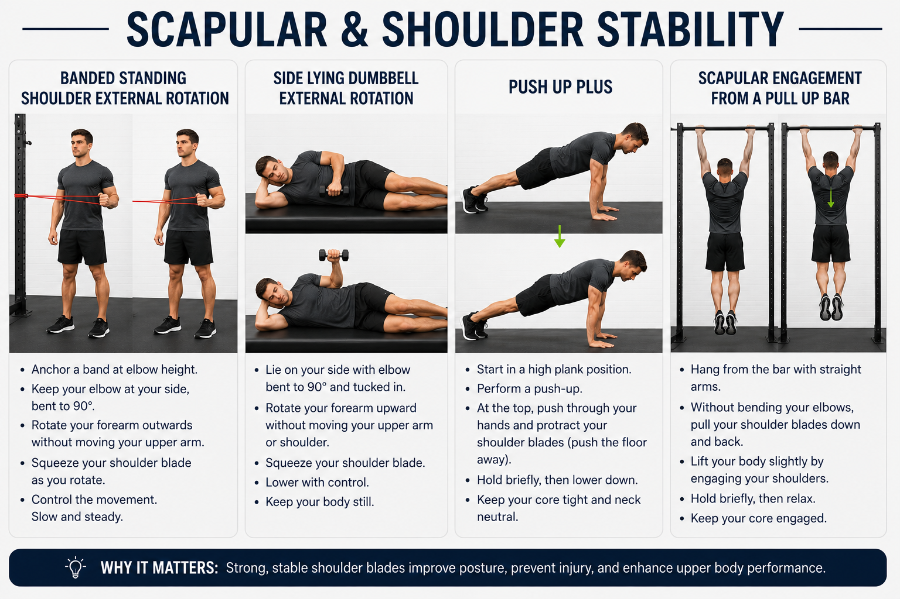
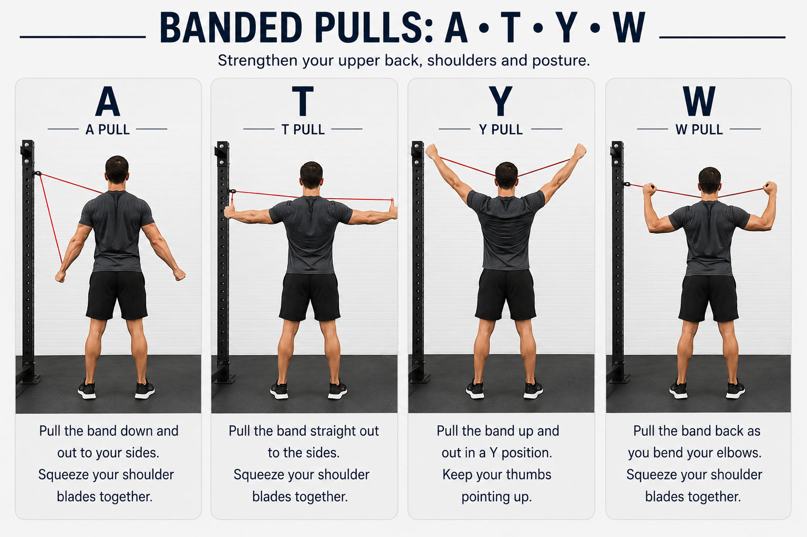
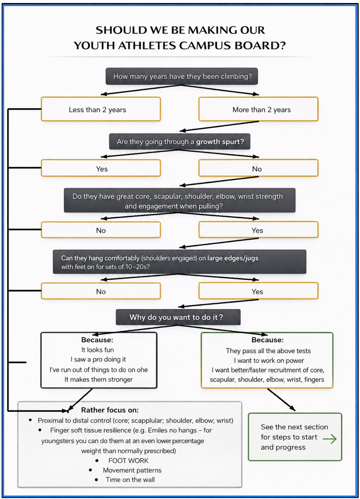

Module 07 · 07 of 07
Written Guide + Quiz
The Final Module
You have now covered anatomy, biomechanics, assessment, programming, technique instruction, and climbing movement. This final module brings it all together — applying every principle from the course to the design of a complete, periodised climbing performance programme. This is the technical heart of climbing coaching.
By the end of this module, you will be able to:
To design effective climbing-specific programmes, a coach must first deeply understand what climbing actually demands from the body. The sport is unique in its combination of isometric grip strength, pulling endurance, whole-body tension, and spatial problem-solving — all performed simultaneously under time pressure and psychological stress.
The finger flexors are the most heavily loaded muscle group in climbing and represent the primary physical limiter for the vast majority of climbers below elite level. Two muscles dominate:
| Muscle | Role & Coaching Relevance |
|---|---|
| Flexor Digitorum Profundus (FDP) | Flexes the distal interphalangeal (DIP) joint — the last joint of the finger. The primary muscle engaged in crimp and open-hand gripping. Inserts via the finger flexor tendons, which pass through the annular pulleys. The FDP is the workhorse of climbing grip strength. |
| Flexor Digitorum Superficialis (FDS) | Flexes the proximal interphalangeal (PIP) joint — the middle joint of the finger. Works alongside the FDP in most grip positions. The FDS is particularly active in the half-crimp position. |
The tendons of both muscles pass through a series of annular pulleys (A1–A5) that hold the tendons close to the bone and create efficient force transmission. When grip load exceeds the structural capacity of these pulleys — through excessive intensity, volume, or inadequate recovery — the pulleys strain or rupture. This is the most common mechanism of finger injury in climbers.
While peak finger strength limits performance on boulder problems, forearm endurance limits performance on routes. The sustained isometric contractions required to maintain grip on holds restrict local blood flow (the occlusion effect — Module 1) and accelerate the accumulation of metabolic fatigue products. The onset of 'the pump' — a tightening, burning sensation in the forearms — signals the transition from aerobic to anaerobic metabolism in the forearm musculature.
Two primary adaptations improve forearm endurance:
The ability to pull the body toward the wall and hold positions against gravity is determined primarily by the latissimus dorsi, biceps brachii, and posterior shoulder musculature (as established in Module 1). Key performance metrics relevant to coaches:
| Metric | Relevance & Target Values (General Population) |
|---|---|
| Maximum pull-ups | A reliable proxy for relative pulling strength. 10+ unbroken pull-ups for recreational climbers; 15–20+ for performance climbers. Control full range of motion (dead hang to chin-over-bar). |
| Weighted pull-up 1RM | Directly measures pulling force; useful for tracking strength development. Intermediate climbers may add 10–20% bodyweight; advanced climbers 40–60%+ bodyweight. |
| Lock-off endurance | Ability to hold a 90-degree bent-arm position; tests both strength and local muscular endurance of the biceps and stabilisers. Relevant to clipping stances and sustained lock positions on routes. |
| Body tension (front lever progression) | Tests the ability to maintain rigid connection between upper and lower body — critical for steep climbing. Progressions: tuck front lever → advanced tuck → straddle → full. |
Below are some suggested upper limb stability exercises to do to help prevent shoulder injuries, improve stability and activate correct muscles before training:

On steep terrain, the core acts as a transmission system — transferring force between the pulling upper body and the pushing lower body. A weak or disengaged core results in a 'break' in the kinetic chain: the hips sag away from the wall, feet pop off footholds, and the arm load increases dramatically. Core training for climbers should emphasise anti-extension, anti-rotation, and hip flexor strength in positions relevant to climbing — not just traditional floor-based exercises.
Finger injuries are the most prevalent chronic injury in climbing, affecting an estimated 40–50% of active climbers in any given year. A coach who understands finger tendon anatomy, injury mechanisms, and load management principles can dramatically reduce the incidence of these injuries in their athletes.
The finger flexor tendons are held against the bones of the finger by a series of five annular (ring-shaped) pulleys — A1 through A5 — and three cruciate (cross-shaped) pulleys. The pulleys function like loops on a fishing rod, keeping the tendon close to the bone through the full range of finger movement and enabling efficient force transmission.
| Pulley | Location & Climbing Relevance |
|---|---|
| A1 | At the MCP joint (knuckle); rarely injured in climbing |
| A2 | On the proximal phalanx (first bone of the finger); THE most commonly injured pulley in climbing. Stressed maximally by the full crimp grip position. |
| A3 | At the PIP joint; less commonly injured |
| A4 | On the middle phalanx; second most commonly injured; stressed by the half-crimp and on pocket holds |
| A5 | At the DIP joint; rarely injured in climbing |
| Grade | Description & Typical Presentation |
|---|---|
| Grade 1 (Mild strain) | Microscopic tearing of pulley fibres. Localised tenderness; pain only with maximum effort or deep palpation. Able to continue climbing with modification. |
| Grade 2 (Partial tear) | Partial thickness tear. Pain with moderate loading; swelling may be present; 'bowstringing' may be visible on resisted flexion. Requires rest from climbing and structured rehabilitation. |
| Grade 3 (Complete rupture) | Full thickness tear. Immediate pain, often with an audible 'pop'. Significant swelling, bruising, and bowstringing. Requires medical evaluation; surgery is sometimes indicated. |
| Grade 4 (Complete rupture with associated injury) | Pulley rupture with additional injury to adjacent structures. Requires medical evaluation and imaging. |
Coaching Response to Finger Injury
If an athlete reports a popping sound or sudden onset of sharp finger pain during climbing, stop the session immediately. Refer to a physiotherapist experienced with climbing injuries for assessment and grading. Do not allow the athlete to return to climbing without medical clearance. Premature return after a pulley injury is the primary cause of re-injury and chronic instability.
Not all finger pain in climbers is a pulley injury. Flexor tendinopathy — degeneration of the tendon substance without acute rupture — is equally common and often presents as a gradual onset of aching pain along the tendon, particularly after sessions. Unlike acute pulley injuries, tendinopathy responds best to progressive loading (not rest), making accurate differentiation important. Refer to a physiotherapist for diagnosis.
The most powerful injury prevention tool available to a climbing coach is intelligent load management. Finger tendons adapt more slowly than muscles — they require at minimum 48–72 hours between high-intensity loading sessions and take weeks to months to fully adapt to new loads.
The repetitive pulling, gripping, and internally rotating demands of climbing create systematic muscle imbalances that, if uncorrected, lead to chronic injury — particularly of the shoulder (rotator cuff impingement, biceps tendinopathy) and elbow (medial epicondylalgia). Antagonist training is not optional for climbing athletes — it is essential maintenance for a healthy, durable body.
| Priority | Muscles & Rationale |
|---|---|
| 1. Shoulder External Rotation | Infraspinatus, teres minor, posterior deltoid. Climbing is dominated by internal rotation and adduction. Without external rotator strength, the shoulder cannot maintain centration in the joint — leading to impingement on overhead reaches and rotator cuff strain on dynamic moves. This is the single most important antagonist group for climbers. |
| 2. Scapular Retractors & Depressors | Rhomboids, middle and lower trapezius, serratus anterior. The chronic protracted, anteriorly tilted scapular position of most climbers ('rounded shoulders') indicates weakness here. Correcting scapular position restores normal shoulder mechanics and reduces impingement risk. |
| 3. Finger and Wrist Extensors | Extensor digitorum communis (EDC), wrist extensors. These directly oppose the finger flexors. Weakness creates a significant flexor-extensor imbalance that increases strain on the pulleys and contributes to medial elbow overuse. Finger extension exercises should be included in every climber's programme. |
| Exercise | Target, Sets/Reps & Notes |
|---|---|
| Band Pull-Apart | Posterior deltoid, rhomboids, external rotators. 3 × 15–20 reps. Hold band at shoulder width, arms straight, pull apart horizontally. One of the most valuable exercises for climbing shoulder health. |
| Face Pull (cable or band) | External rotators, rear deltoid, upper trapezius. 3 × 15 reps. Pull toward the face with elbows high and wide. Combine external rotation at end range. Essential for counteracting internal rotation bias. |
| Prone A-T-Y-W raises | Lower and middle trapezius, posterior deltoid. 3 × 10–12 of each letter. Performed prone on a bench or floor with light weights. Targets chronically weak posterior shoulder stabilisers. See image below. |
| Dumbbell External Rotation | Infraspinatus, teres minor. 3 × 12–15 reps. Side-lying or with the elbow at 90 degrees braced against the side. Use light weight — these are small muscles and quality matters. |
| Push-up / Dumbbell Press | Pectorals, triceps, anterior deltoid, serratus anterior. 3 × 10–15 reps. Direct horizontal push — antagonist to the vertical pull of climbing. Serratus anterior activation (protraction at the top) is particularly important for scapular health. |
| Tricep Dips / Pushdowns | Triceps brachii. 3 × 10–15 reps. Directly oppose the biceps and brachialis dominant in climbing. Include mantling practice as a functional climbing-specific tricep exercise. |
| Finger Extension (rubber band) | Extensor digitorum communis. 3 × 20–25 reps. Wrap a thick rubber band around fingers and thumb; open the hand against resistance. Simple, inexpensive, and highly effective. |
| Wrist Curls (both directions) | Wrist flexors (loaded) and extensors (loaded). 3 × 15 reps each direction. Use a light dumbbell. Strengthens and balances the wrist musculature, reducing lateral epicondylalgia risk. |

Programming Antagonist Work
Antagonist training should be performed 2–3 times per week, ideally after climbing sessions or on dedicated conditioning days. It takes 15–25 minutes and should never be skipped during high-volume training blocks. The pulling-to-pushing volume ratio should approach 1:1 over a week of training.
The hangboard (fingerboard) is the most powerful and precise tool for developing finger-specific strength in climbers. When programmed correctly it produces measurable strength gains; when misused it is one of the primary causes of finger injury. Coaches must understand the principles of hangboard programming before prescribing it.
Prerequisite Check
Hangboard training should only be introduced to athletes who have completed a minimum of 1–2 years of regular climbing and have no active finger injuries. Youth athletes (under 16) should not use the hangboard at all. Adults returning from finger injury require physiotherapist clearance and a progressive introduction over several weeks before resuming normal hang protocols.
| Variable | Description & Guidance |
|---|---|
| Edge depth | The depth (in mm) of the edge being used. A 20mm edge is a standard reference point for most protocols. Shallower edges (15mm, 10mm) increase difficulty; deeper edges (25mm, 35mm, full crimp edge) reduce it. Progress to shallower edges only when current depth is fully manageable. |
| Grip position | Open hand is preferred for training. Half crimp is acceptable. Full crimp should be avoided on hangboards due to high A2 pulley stress — save it for on-wall performance. |
| Duration of hang | Typically 5–10 seconds for max strength protocols; 20–45 seconds for endurance-oriented protocols. Shorter hangs allow heavier loads; longer hangs train local muscular endurance. |
| Rest between sets | Max strength: 2–3 minutes (partial PCr recovery). Endurance: 30–60 seconds (intentional incomplete recovery). Total rest between exercises: 5+ minutes for max strength work. |
| Load | Bodyweight only for beginners. Add weight (via a weight belt or vest) to increase difficulty. Reduce weight (via a pulley system or feet on the ground) to decrease difficulty. Load should allow clean technique throughout. |
| Number of sets | 4–6 sets per exercise for strength focus. 2–3 sets for maintenance or within a higher-volume session. |
The following is a well-established max strength protocol for intermediate to advanced climbers. It should not be performed more than twice per week with at least 48 hours between sessions.
| Parameter | Set Structure | Notes |
|---|---|---|
| Warm-up | 10–15 min easy climbing + 3 sets of 10s hangs at bodyweight on a large edge (35mm) | Never skip warm-up; tendons need progressive loading to prepare for max effort |
| Work sets | 4–6 sets × 10s hang at maximum added weight that allows clean grip | Rest 3 minutes between sets. Use open-hand or half-crimp only. |
| Edge depth | Typically 18–20mm for most intermediate climbers | Progress to shallower edges (15mm) only after 4–6 weeks at current depth with no discomfort |
| Frequency | 2× per week maximum | 48–72 hours minimum between sessions targeting same tissue |
| Progression | Add 2–2.5kg when all sets are completed with clean form | Increase edge difficulty (shallower edge) every 4–6 weeks as an alternative progression |
| Session duration | 25–35 minutes total (excluding warm-up) | Hangboard work should follow climbing, not replace it |
For athletes new to structured finger training, introduce hangboard work conservatively over 4–6 weeks before progressing to intensity-based protocols:
The campus board — a series of wooden rungs on an overhanging board, used without feet — was developed by Wolfgang Gullich at the Campus Centre in Nuremberg in the 1980s. It is one of the most effective tools for developing contact strength, explosive power, and upper body coordination, but it is also one of the most injury-prone training tools in climbing if misused.
Campus Board Prerequisites
Campus board training is for intermediate to advanced climbers only. Prerequisites: minimum 2 years consistent climbing experience; able to complete 10 strict pull-ups; no active finger or shoulder injuries; skeletal maturity (18+ years). Introducing campus training to under-prepared athletes is a primary cause of acute finger and shoulder injury.
| Exercise | Description & Athletic Demand |
|---|---|
| Laddering (1-2-3) | Move up the board rung by rung — right hand to rung 1, left to rung 2, right to rung 3. Develops continuous coordination and rate of force development. The foundational campus movement pattern. |
| Double dynos (1-2-1 or 1-3-1) | Both hands move simultaneously from rung to rung. Trains explosive bilateral power and contact strength (the ability to grip explosively upon landing a hold). |
| Max reaches | From a starting position, skip as many rungs as possible in a single move (e.g. 1 to 5, 6, or 7). Measures single-move explosive power. Highly demanding — maximum 3–4 attempts with full recovery. |
| Footless one-arm movements | Advanced — one arm moves while the other holds the rung. Extreme demand on contact strength and shoulder stability. Only for advanced athletes. |
The following flow chart and guidelines are suggested to all coaches regarding when to start campus board training with youth athletes:

Suggestions on how to start and progress campus boarding in youth athletes that have passed the above tests
This is a recommended campus-boarding progression which's purpose is to gradually introduce contact force, reduce "shock" loading and only later add dynamic movement.
Absolute "don'ts"
Suggested warm-up template (10–15 minutes)
You only progress if the athlete is symptom-free during, after, and the next day!
Global rules (apply to every phase)
Goal: Prepare shoulders/scapula and teach quiet, controlled contact.
2×/week, 10–15 min
If an athlete can't keep shoulders engaged or swings wildly, don't campus yet!
Goal: Introduce contact and support with minimal finger stress.
Setup
Example session (1×/week)
Progression criteria to Phase 2
Zero pain + quiet movement + no skin tears + no elbow/shoulder irritation for 3 consecutive sessions.
Goal: Teach controlled force application without dynamic loading.
Add one of these at a time
Example session
Progression criteria
Still RPE ≤6, no next-day soreness in fingers/pulleys.
Goal: Introduce partial unloading and body tension, still protecting fingers.
Tools
A box/chair under the board, or a light resistance band to assist, or toe-dabs.
Example session
Rules
Goal: Build repeatable, sub-max power endurance without max force.
Session (still 1×/week)
Keep it sub-max
If they can't repeat the set with the same form, it's too hard.
Goal: Very small controlled pops — never max.
Constraints
Session
Practical programming examples (by age/phase)
Extra safety levers (use these before "harder holds")
If you need progression but want to keep fingers safe, progress via:
Practical signs that a youth climber is going through a growth spurt
Endurance is a critical and often underdeveloped quality in climbers who focus heavily on bouldering or strength training. There are several distinct endurance qualities in climbing — aerobic base endurance, power endurance, and local muscular endurance — each requiring a different training approach.
ARC training is sustained, continuous low-intensity climbing performed for 20–45 minutes per session. The goal is to stay below the anaerobic threshold throughout — the forearms should feel mildly pumped but never acutely fatigued. Heart rate should be in Zone 2 (60–70% HRmax).
| ARC Parameter | Guideline |
|---|---|
| Duration | 20–45 minutes of continuous climbing or traversing per set |
| Intensity | 2–4 grades below the climber's maximum; should be able to hold a conversation; mild pump only |
| Rest between sets | 5–10 minutes if performing multiple sets |
| Frequency | 2–4 times per week during base-building phase; 1–2 times per week for maintenance |
| Purpose | Develops capillary density in the forearms, improves aerobic metabolism, builds movement efficiency and relaxation, and rehabilitates from injury |
| Common error | Going too hard — the pump builds beyond mild and becomes acute. This switches from ARC to power endurance and loses the aerobic adaptation target. If the forearms are burning, the intensity is too high. |
Power endurance is the ability to sustain near-maximal effort over repeated attempts — the quality that determines performance on sustained hard routes. The 4x4 method is the most widely used and effective power endurance training format for climbers.
4x4 Protocol: Select four boulder problems of moderate difficulty (typically 2–4 grades below max). Climb all four consecutively without rest. Rest 3–5 minutes. Repeat 3–4 times.
| 4x4 Variable | Guidance |
|---|---|
| Problem difficulty | Should be challenging but completable — falling off mid-circuit defeats the purpose. Choose problems that feel about 7/10 effort when fresh. |
| Rest between sets | 3–5 minutes is standard. Shorter rest increases the endurance demand; longer rest makes it more strength-focused. |
| Number of circuits | 3–4 circuits is typical. 2 circuits for beginners or early in a training block; up to 5 for advanced athletes. |
| Frequency | 1–2 times per week maximum during power endurance phase; high recovery demand. |
| Progression | Increase problem difficulty or add a 5th problem per circuit after 2–3 weeks. |
Beyond ARC and 4x4s, additional endurance methods provide variety and specificity:
In Module 4 we established the theory of periodisation — macrocycles, mesocycles, microcycles, and the three primary models (linear, undulating, block). Here we apply those principles specifically to climbing, building a periodised framework that accounts for the sport's unique combination of technical skill, finger strength, endurance, and competition calendar.
| Phase | Duration, Focus & Key Methods |
|---|---|
| Phase 1 — Base / Accumulation (6–8 weeks) | High volume, low intensity. Build aerobic base, develop general strength, address weaknesses and imbalances, consolidate technique. Methods: ARC training, antagonist hypertrophy, general strength (pull-up volume, deadlifts, rows), mobility work. Fingerboard volume is moderate at bodyweight; no max hangs yet. |
| Phase 2 — Strength (4–6 weeks) | Moderate volume, increasing intensity. Develop maximum finger strength and pulling power. Methods: Max hangboard protocols (weighted hangs), weighted pull-ups (3–5 rep range), recruitment pulling (explosive single-arm-emphasis moves on board), campus board introduction. Reduce ARC volume; maintain antagonist work. |
| Phase 3 — Power Endurance (3–5 weeks) | Moderate volume, high intensity, sport-specific. Convert strength gains into climbing performance. Methods: 4x4s, linked circuits, limit bouldering, sport route laps, competition simulation. Reduce max hangboard and weighted pull-up volume. Maintain antagonist work. |
| Phase 4 — Performance / Peak (2–4 weeks) | Low volume, high specificity. Express performance at competitions or on project routes. Methods: Climbing at limit grade; project attempts; short, sharp high-quality sessions. Minimal supplementary training. Prioritise sleep, nutrition, and recovery. |
Between each phase, insert a deload week of 40–50% volume to allow accumulated fatigue to dissipate and the supercompensation response to occur. During the transition, athletes often report feeling unusually strong — this is the correct time to begin high-intensity work in the next phase.
| Period | Training Emphasis |
|---|---|
| Off-season (6–12 weeks) | High-volume base building; address weaknesses; build general strength; make technique changes (easier to change technique when performance pressure is absent). Train 4–5 days per week with full focus on development over performance. |
| Pre-season (8–10 weeks) | Transition to strength and power endurance; begin climbing-specific training blocks; introduce competition simulation. |
| In-season / Competition period | Maintain fitness; manage fatigue; peak for key events. Training volume drops; specificity increases. Prioritise recovery between competitions. |
| Post-season / Transition (2–4 weeks) | Complete rest or active recovery only. Mental and physical regeneration. Reflect on the season; set goals for next year. Do not start the next training block while still fatigued from competition. |
Bringing together every concept from this module — and the entire course — here is a framework for writing a complete 12-week climbing performance programme. This structure should be adapted based on the individual athlete's assessment findings, goals, training history, and available time.
| Parameter | Example Athlete |
|---|---|
| Age / Sex | 27-year-old male |
| Climbing experience | 4 years; primarily bouldering; also sport climbing outdoors |
| Current level | V5–V6 bouldering; 6c sport climbing |
| Goal | V8 bouldering and 7b sport climbing within 12 months; 12-week block targets V7 and 7a |
| Identified limiters (from assessment) | Finger strength (dead hang 15s on 20mm); forearm endurance (pump onset within 8 minutes); hip mobility restriction affecting drop-knee; antagonist weakness (less than 8 pull-ups; no dedicated shoulder work) |
| Available training days | 4 days per week (Monday, Wednesday, Friday, Saturday) |
| Lifestyle | Office-based work; adequate sleep; no health contraindications; no current injuries |
| Weeks | Phase & Focus | Key Training Content |
|---|---|---|
| 1–4 | Base / Accumulation | Monday: ARC training 2 × 25 min + antagonist circuit (pull-apart, face pull, push-up, finger extension). Wednesday: Technique bouldering (open-hand focus, drop-knee drills) + hip mobility. Friday: Bodyweight hangboard introduction (3 × 10s on 20mm, open hand) + weighted pull-ups (3 × 8 reps). Saturday: Volume bouldering (social / easy problems). Deload: Week 4 reduced to 50% volume. |
| 5–8 | Strength | Monday: Max hangboard (5 × 10s weighted, 20mm, open hand) + weighted pull-ups (4 × 5 reps). Wednesday: Technique bouldering + antagonist circuit. Friday: Max hangboard + sport-specific pulling (lock-off holds, recruitment moves on board). Saturday: Bouldering session (limit problems, max 3 attempts per problem). Deload: Week 8. |
| 9–11 | Power Endurance | Monday: 4x4 circuit (3 circuits, moderate problems) + antagonist maintenance. Wednesday: Sport route laps (3 × 5-minute circuits on 6b–6c) + technique. Friday: Limit bouldering (quality over quantity) + antagonist. Saturday: Project attempts / redpoint climbing. No deload — Week 12 acts as taper. |
| 12 | Peak / Taper | Monday: Short quality bouldering session (fresh, below limit). Wednesday: Easy ARC + mobility. Friday: REST. Saturday: Target performance — project attempt or competition. |
Before finalising any climbing performance programme, review the following:
Module 07 has applied the full breadth of the course to the specific demands of climbing performance. Key takeaways:
| Flexor Digitorum Profundus (FDP) | The deep finger flexor muscle that flexes the distal joint of the finger; the primary muscle loaded during climbing grip and the source of force transmitted through the annular pulleys. |
| Annular Pulley | A fibrous ring that holds the finger flexor tendons close to the bone; the A2 pulley on the proximal phalanx is the most commonly injured structure in climbing. |
| Bowstringing | A visible or palpable displacement of the finger flexor tendon away from the bone when the finger is flexed under resistance; indicates a significant pulley rupture. |
| Pulley Injury Grading | A 1–4 scale classifying severity of annular pulley damage: Grade 1 (mild strain) through Grade 4 (complete rupture with associated injury). |
| Tendinopathy | Degenerative changes in tendon tissue without acute rupture; presents as gradual onset pain along the tendon; responds best to progressive loading rather than rest. |
| Contact Strength | The ability to grip a hold explosively at the moment of contact; a key quality developed through campus board training and dynamic bouldering. |
| Capillarisation | The development of new capillary blood vessels in muscle tissue through sustained low-intensity training; increases oxygen delivery and metabolite clearance in the forearms. |
| ARC Training | Aerobic Restoration and Capillarisation — sustained 20–45 minute continuous climbing at low intensity; develops forearm aerobic endurance and efficient movement. |
| 4x4s | A power endurance training method: four boulder problems climbed consecutively without rest, repeated 3–4 times with 3–5 minute rest between circuits. |
| Repeaters | A hangboard endurance protocol: 7 seconds on, 3 seconds off, repeated 6 times per set with 3-minute rests; targets local forearm muscular endurance. |
| Campus Board | An overhanging training board with protruding wooden rungs used without feet; develops contact strength, explosive power, and upper body coordination. |
| Lock-Off | A static pulling position with the arm bent at 90 degrees or greater; requires isometric strength of the biceps, brachialis, and shoulder stabilisers. |
| Front Lever | A gymnastics-derived movement where the body is held horizontal from a bar or rings; tests and develops core anti-extension strength and pulling power. |
| Acute-to-Chronic Workload Ratio | The ratio of recent training load (acute, past 1 week) to long-term average load (chronic, past 4 weeks); a rising ratio is associated with increased injury risk. |
| Power Endurance | The ability to sustain near-maximal effort across multiple hard moves or over a sustained period; the key quality for performance on difficult sport routes. |
Course Complete
Congratulations — you have completed all seven modules of the Core Learning climbing coach certification. You now hold the complete foundation across anatomy, assessment, programming, technique instruction, movement analysis, and climbing-specific conditioning needed to coach climbers safely and effectively at any level.